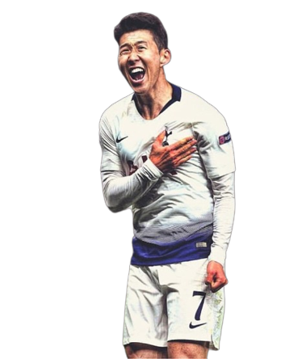
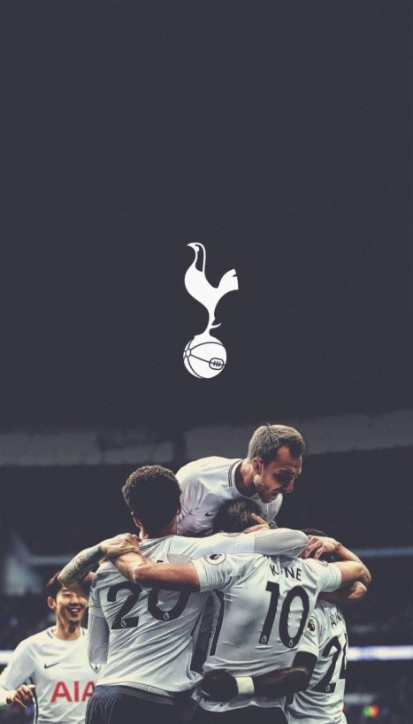
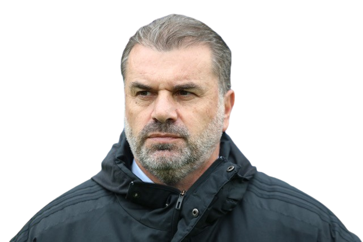
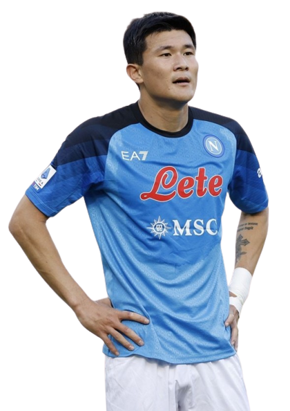
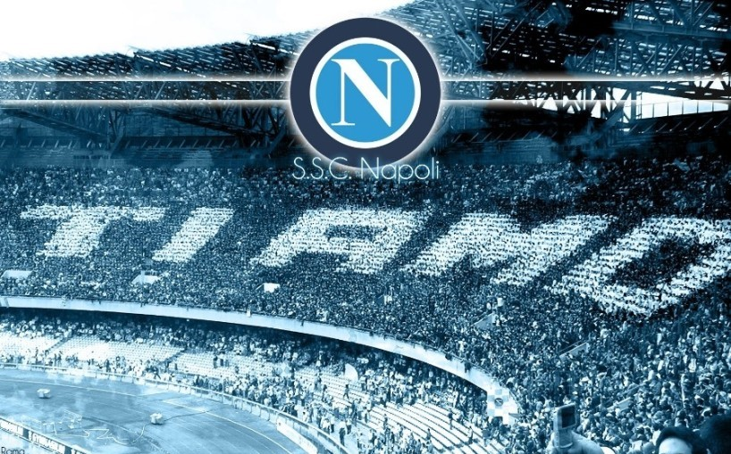
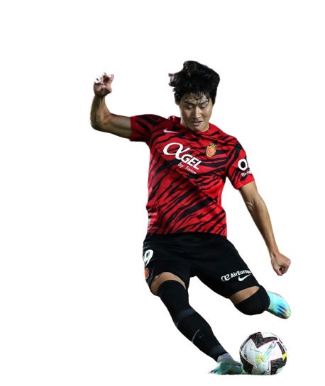
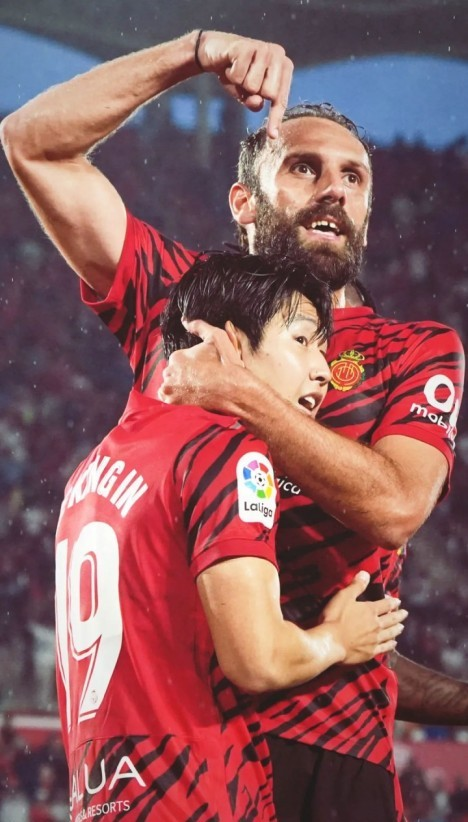

손흥민
손흥민
차범근과 박지성의 뒤를 이어 한국의 전설이 된 손흥민이다
손흥민은 분데리가 레버쿠젠에서 토트넘으로 2015년에 이적하였다.
손흥민은 차범근의 해외축구 득점수를 깨부수며 지금까지 계속 활약중이다.
차범근과 박지성 선수와는 다르게 우승 경력이 없지만
2020년 푸스카스 수상, 2022년 발롱도르 11위, 2022년 프리미어리그 득점왕등
개인 커리어로는 누구도 반박 할 수 없는 "월드클라스"이다.

토트넘 훗스퍼 FC
토트넘 훗스퍼 FC
1882년에 설립된 런던을 연고지로하는 축구클럽이다.
토트넘을 상징하는 엠블럼은 수탉이 공위에 서있는 문양이다.
라이벌 구단으로는 아스날이 있다.
토트넘 구단의 특징으로는 다른 클럽들과 같이
우승을 목표로하는 팀이 아닌 셀링 클럽이라는 점이다.
셀링 클럽은 좋은 선수들을 키워 판매하여 돈을 버는 구단을 의미한다.
 해리 케인
해리 케인토트넘의 또다른 월드클라스
영국 출신의 공격수
현재 epl 역대 득점 1위를 앞둠

엔제 포스테코글루
토트넘으로 부임한 새로운 감독
시즌 중반 콘테감독과 이별하며
새로운 감독 선임에 큰 어려움
스코틀랜드 리그에서 우승 후 넘어온 감독
다음 시즌 팬들의 걱정과 기대를 받고 있음
토트넘으로 부임한 새로운 감독
시즌 중반 콘테감독과 이별하며
새로운 감독 선임에 큰 어려움
스코틀랜드 리그에서 우승 후 넘어온 감독
다음 시즌 팬들의 걱정과 기대를 받고 있음

김민재
김민재
33년만의 나폴리의 우승에 큰 기여한 김민재가
강한 수비가 특징인 이탈리아 리그에서 올해의 수비수로 뽑혔다.
"철기둥"이라는 별명이 지어지고 나폴리 팬들에게 큰 사랑을 받고 있다.
나폴리에서 오래동안 활약한 쿨리발리의 대체자로
이적 후 많은 사람들이 불안해하였지만 실력으로 증명하였다.
다음 시즌 뮌헨으로의 이적의 소문이 있다.

SSC 나폴리
SSC 나폴리
아르헨티나의 전설 마라도나의 예전 소속팀으로
이탈리아 세리에 A의 강팀 중 하나이다.
과거 1905년 창단되었고 1980년대 초반까지는 리그 3위에 오르는 등
경쟁력있는 팀이었지만 1984년 승점 1점차로 겨우 강등을 면하면서
선수 보강을 위해 마라도나를 영입하게된다.
이후 1987년 첫 리그 우승을 하게 되었고
올해 33년만의 리그 3번째 우승을 기록하게 되었다.

이강인
이강인
발렌시아 유스 출신의 대한민국 특급 유망주이다.
과거 날아라 슛돌이 프로그램에 출연한 과거가 있고
11살의 어린나이에 발렌시아 유스 생활을 시작하였다.
이후 2019년 u-20 월드컵에 출전에 골든볼을 수상하였지만
어떤 이유에서인지 2021년 발렌시아에서 방출
2021년 마요르카로 합류하게 된다.
마요르카에서 엄청난 활약으로 22/23 시즌 팀은 잔류
이강인은 이적이 확실시 되는 분위기로
많은 팬들이 이강인의 다음 거취를 궁금해하고 있다.

마요르카
마요르카
1916년에 창단한 스페인의 축구 클럽으로
과거 앙헬 나달과 사무엘 에투와 같은 뛰어난 선수들을 배출한 클럽이다.
과거 챔피언스에 진출하는 등 좋은 성적을 거두며 1부리그에 있었으나
2013년 구단에 찾아온 재정난으로 인해 다음 시즌 강등당하고 말았다.
이후 2부리그와 3부리그를 전전하다 18/19시즌 1부리그 복귀에 성공하였다.
하지만 바로 다음시즌인 19/20시즌 강등하고 말았고
또다시 다음시즌인 20/21시즌 1부리그로 복귀 후 이번 22/23시즌 8위로 리그를 마쳤다.
 감독
감독이강인의 영입에 의심
이강인의 재능 확인 후 무한한 신뢰
최근 이강인에게 인종차별 논란
"중국인"이라는 발언